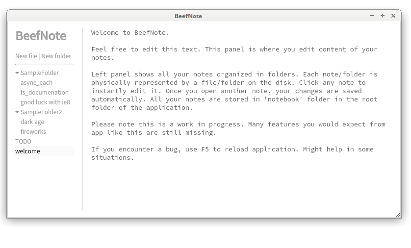

Simple note taking application.
Simple note taking application. BeefNote lets you create and edit notes quickly and without any distractions. Each note is stored as a single file on your disk, so you can edit/backup/archive/restore your notes easily.
BeefNote is built on top of nw.js runtime, which itself implements Chromium and node.js.
Bundled application builds (including nw.js) can be downloaded from links in left part of this page.
Unpack downloaded file and run nw executable (nw.exe on Windows).
To run BeefNote, you will need nw.js runtime, that can be downloaded directly from nw.js website or from these links:
Once you download and extract nw.js runtime, checkout BeefNote and
notebook, www and package.json) and run $ /path/to/nw .
notebook, www and package.json) to nw.exe to run itnotebook, www and package.json) and run/path/to/nwjs.app/Contents/MacOS/nwjs .
Big part of basic functionality is still missing. This is work in progress.
Once you start BeefNote, left panel shows all your notes organized in folders. Each note/folder is physically represented by a file/folder on the disk. Click any note to instantly edit it. Once you open another note, your changes are saved automatically.
All your notes are stored transparently without any junk in 'notebook' folder in the root folder of the application. That way you can edit them in another applications, archive, backup, restore or do whatever you want with them.